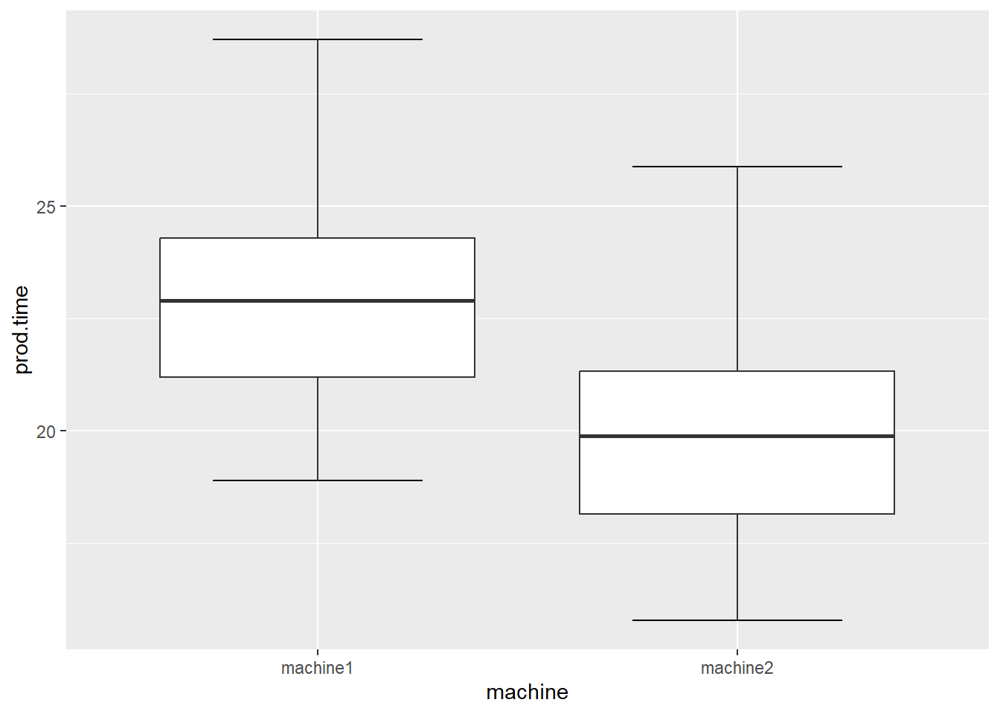

#Load Tidyverse
library(tidyverse)
#load dplyr
library(dplyr)
#load ggplot2
library(ggplot2)Two Sample Means Testing
Today we discuss two-sample hypothesis testing for differences in population means. In a variety of fields, the need often arises to compare the behavior of one population with the behavior of another population. To do this, we draw two samples (one from each population). Hence the name “Two Sample Tests”.
Sometimes the samples are independent, and sometimes they are matched in some way. Each sample comes from a separate population
The objective is mostly to determine whether these populations are different from each other. Usually this involves tests of hypotheses about population means.
We can also test hypotheses about population variances.
In testing hypotheses with two samples (from two different populations). The null hypothesis (\(H_0\)) here is that the two populations are similar
i.e. the average behavior of (a variable) in the two populations are similar.
i.e. any differences you see between the two samples are due to chance and not real.
The alternative hypothesis (\(H_1\)) is that the average behavior of (a variable) in the two populations is NOT similar/the same.
We can have two-sided hypothesis testing for means:
null \(H_0\): mean 1 = mean 2 or mean 1 - mean 2 = 0 alternative \(H_1\): mean 1 \(\neq\) mean2 or mean 1 - mean 2 \(\neq\) 0
We can also have one-sided or one-tailed tests here, where the
null \(H_0\): mean 1 - mean 2 = 0 and the alternative, \(H_1\): mean 1 - mean 2 > 0
null \(H_0\): mean 1 - mean 2 = 0 and the alternative, \(H_1\): mean 1 - mean 2 < 0
The zero in these hypotheses is just the typical case. It is possible to test for any value - just substitute that value for zero e.g.
where the null \(H_0\): mean 1- mean 2 = 5 and the alternative, \(H_1\): mean 1 - mean 2 \(\neq\) to 5
To carry out the test follow these steps:
Step 1: Set significance level (select your alpha)
Step 2: Write out the null and alternative hypotheses
Step 3: Calculate the mean and standard deviation of each sample
Step 4: Subtract one mean from the other
Step 5: Use a formula to convert the result of Step 4 into a test statistic
Step 6: Obtain the p-value corresponding to the statistic
Step 7: Compare the p-value from Step 5 to your chosen alpha
Step 8: If p-value < = alpha reject null hypothesis otherwise fail to reject the null hypothesis
Step 9: Write your results and conclusion about the test
Two sample tests for means in R
There are two different t-tests:
- Independent-means t-test: also called the independent-measures or independent-samples t-test (assume equal or unequal variances)
- Dependent-means t-test: also called matched-pairs or paired-samples t-test
INDEPENDENT MEANS T-TEST: Unknown population variances but are assumed equal
Example 1: Working with samples from two populations.
Assume equal variances
Using 2 samples from 2 populations. The variances of the population variables are not known but are assumed equal
When you do not know a population variance, you use the sample variance to estimate it.
When you have two samples, you average the two sample variances to arrive at the estimate (this is called pooling)
Assume we have the following samples from populations we do not know variances for. Assume the variances are equal.
The data are from production times for two machines (machine1 and machine2). The company is trying to determine if the average production time for both machines is the same (i.e. difference in population means for production time = 0)
machine1 <-c(24.58,22.09,23.70, 18.89, 22.02,28.71,24.44,20.91,23.83,20.83)
machine2 <-c(21.61,19.06,20.72,15.77,19,25.88,21.48,17.85,20.86,17.77)To test the following hypotheses at 5% significance level(\(\alpha\)):
- \(H_0\) (null): true difference in means = 0
- \(H_1\) (alternative): true difference in means <> 0 (not equal to zero)
R Code to test \(H_0\) versus \(H_1\) above:
t.test(machine1, machine2, var.equal=TRUE, alternative="two.sided", mu=0)
Two Sample t-test
data: machine1 and machine2
t = 2.4396, df = 18, p-value = 0.02528
alternative hypothesis: true difference in means is not equal to 0
95 percent confidence interval:
0.4164695 5.5835305
sample estimates:
mean of x mean of y
23 20 Finding/Result:
p-value (0.02528) is less than 5% significance setting (i.e. p-value \(< \alpha\)) so we reject the null hypothesis.
Conclusion:
Since we reject the null, there is evidence that the true difference in means (i.e. the difference in the population variable means) is not equal to zero. This means that the two populations are different or behave differently.
Example 2: Working with a data frame. Assume variances are equal
We can work with a data frame that contains the two machine data as follows:
Create data frame in long format. First create a vector for the 20 production times - machine1’s times first then machine2’s production times.
prod.time <-c(machine1, machine2)
#create a vector of the two machine names
machine <- c("machine1", "machine2")
#Turn vector above into a vector of 10 repetitions of machine1 and machine2
machine <-rep(machine, times=c(10,10))
#Create data frame
DF <-data.frame(machine, prod.time)
#display DF
DF machine prod.time
1 machine1 24.58
2 machine1 22.09
3 machine1 23.70
4 machine1 18.89
5 machine1 22.02
6 machine1 28.71
7 machine1 24.44
8 machine1 20.91
9 machine1 23.83
10 machine1 20.83
11 machine2 21.61
12 machine2 19.06
13 machine2 20.72
14 machine2 15.77
15 machine2 19.00
16 machine2 25.88
17 machine2 21.48
18 machine2 17.85
19 machine2 20.86
20 machine2 17.77#or use the view function
view(DF)We can test the following at \(\alpha = 5\)%
- \(H_0\): Mean production time across the two machines are similar/equal
- \(H_1\): Mean production time across the two machines are not similar/equal
We then conduct the t-test as follows:
with(DF, t.test(prod.time ~ machine, var.equal=TRUE,
alternative="two.sided", mu=0))
Two Sample t-test
data: prod.time by machine
t = 2.4396, df = 18, p-value = 0.02528
alternative hypothesis: true difference in means between group machine1 and group machine2 is not equal to 0
95 percent confidence interval:
0.4164695 5.5835305
sample estimates:
mean in group machine1 mean in group machine2
23 20 Finding/result:
the p-value (0.02) is < alpha (0.05), so we reject the null hypothesis (\(H_0\))
Conclusion:
Since we reject the null hypothesis, there is evidence in favor of the alternative (i.e. there is evidence that the mean production time for the two machines are not similar/equal)
visualizing your findings/results in a Boxplot:
ggplot(DF, aes(x=machine, y=prod.time))+
stat_boxplot(geom="errorbar", width=.5)+
geom_boxplot()
Example 3
The data are from production times for two performance monitoring devices (fitbit1 and fitbit2). Suppose you are trying to determine if the devices are very similar in the population (i.e. difference in population means for heartbeat measurements = 0).
fitbit1 <-c(65,120,45, 46, 47,49,51,70,44,69, 85,81, 80)
fitbit2 <-c(61,109,45,55,66,85, 62,74,76,66,85,102,67)To test the following hypotheses at 1% significance level(alpha):
- \(H_0\) (null): true difference in means = 0
- \(H_1\) (alternative): true difference in means <> 0 (not equal to zero)
R Code to test \(H_0\) versus \(H_1\) above:
t.test(fitbit1, fitbit2, var.equal=TRUE, alternative="two.sided", mu=0)
Two Sample t-test
data: fitbit1 and fitbit2
t = -0.97714, df = 24, p-value = 0.3382
alternative hypothesis: true difference in means is not equal to 0
95 percent confidence interval:
-24.179230 8.640768
sample estimates:
mean of x mean of y
65.53846 73.30769 Finding/Result:
p-value (0.3382) > alpha (0.01). We fail to reject the null hypothesis
Conclusion
Since we fail to reject the null hypothesis, we conclude that there is evidence in favor of the alternative hypothesis.
Example 4
The data are from production times for two performance monitoring devices (fitbit1 and fitbit2). Suppose you are trying to determine if the devices are very similar in the population (i.e. difference in population means for heartbeat measurements = 5).
fitbit1 <-c(65,120,45, 46, 47,49,51,70,44,69, 85,81, 80)
fitbit2 <-c(61,109,45,55,66,85, 62,74,76,66,85,102,67)To test the following hypotheses at 1% significance level(alpha):
- \(H_0\) (null): true difference in means = 5
- \(H_1\) (alternative): true difference in means <> 5 (not equal to 5)
R Code to test \(H_0\) versus \(H_1\) above:
t.test(fitbit1, fitbit2, var.equal=TRUE, alternative="two.sided", mu=5)
Two Sample t-test
data: fitbit1 and fitbit2
t = -1.606, df = 24, p-value = 0.1214
alternative hypothesis: true difference in means is not equal to 5
95 percent confidence interval:
-24.179230 8.640768
sample estimates:
mean of x mean of y
65.53846 73.30769 Finding/Result:
p-value (0.1214) > alpha (0.01). We fail to reject the null hypothesis
Conclusion:
Since we fail to reject the null hypothesis, there is evidence in favor of the alternative
Example 6: One-sided test/one-tailed
Suppose you have two samples from two groups of students that took the same test and you want to test which population did better on the test on average. Assume the population variances are equal for the test score variable.
Conduct a significance test at 10% that first set of test takers (test_t1) are better test takers than the second set of test takers (test_t2)
test_t1 <-c(87,85,99,75,92,43,56)
test_t2 <-c(98,97,64,56,98,100,47,66)- \(H_0\): population mean for
test_t1= population mean fortest_t2 - \(H_1\): population mean for
test_t1> population mean fortest_t2 - \(\alpha = 10\)% = 0.1
t.test(test_t1, test_t2, var.equal=TRUE, alternative="greater", mu=0)
Two Sample t-test
data: test_t1 and test_t2
t = -0.13925, df = 13, p-value = 0.5543
alternative hypothesis: true difference in means is greater than 0
95 percent confidence interval:
-21.06633 Inf
sample estimates:
mean of x mean of y
76.71429 78.25000 Findings/results?
Conclusion?
INDEPENDENT MEANS T-TEST: Unknown population variances but are NOT assumed equal
Example 1: Assume unequal population variable variances
The data are from production times for two machines (machine1 and machine2). The company is trying to determine if the average production time for both machines is the same (i.e. difference in population means for production time = 0)
machine1 <-c(24.58,22.09,23.70, 18.89, 22.02,28.71,24.44,20.91,23.83,20.83)
machine2 <-c(21.61,19.06,20.72,15.77,19,25.88,21.48,17.85,20.86,17.77)To test the following hypotheses at 5% significance level(alpha):
- \(H_0\) (null): true difference in means = 0
- \(H_1\) (alternative): true difference in means <> 0 (not equal to zero)
R Code to test \(H_0\) versus \(H_1\) above:
t.test(machine1, machine2, var.equal=FALSE, alternative="two.sided", mu=0)
Welch Two Sample t-test
data: machine1 and machine2
t = 2.4396, df = 17.985, p-value = 0.02529
alternative hypothesis: true difference in means is not equal to 0
95 percent confidence interval:
0.4163193 5.5836807
sample estimates:
mean of x mean of y
23 20 Finding/Result:
p-value (0.02528) is less than 5% significance setting (i.e. p-value < alpha) so we reject the null hypothesis.
Conclusion:
Since we reject the null, there is evidence that the true difference in means (i.e. the difference in the population variable means) is not equal to zero. This means that the two populations are different or behave differently.
Given that we reject the null for both significance tests (when we assume equal and unequal variances), we can conclude that the production times for both machines are different at the population level (i.e. their average behavior is different).
Example 2: Difference in means test with unknown population variances that are assumed equal
Suppose the Boulder Valley School District (BVSD) devised a questionnaire to measure the level of satisfaction for graduates of two competing state schools. Past history indicates that the variance in the metric for measuring satisfaction for both schools is equal.
The statistic is randomly administered to 11 schools from the first school (School1) and 15 students from the second school (School2) as follows:
school1 <-c(69,75,76,80,81,82,86,89,91,92,97)
school2 <-c(59,62,66,70,70,75,75,77,78,79,81,84,84,86,94)Question 1:
Conduct a test of significance at 10% to verify if the difference in mean population satisfaction levels is greater than zero. Assume the variances in satisfaction levels in the population are not known and are not known to be equal.
Question 1 Answer:
This is a one-sided test
- \(H_0\): Mean population satisfaction levels for school 1 is equal to mean population satisfaction levels for school 2 (implying that difference mean population satisfaction levels is less than or equal to zero).
- \(H_1\): Mean population satisfaction levels for school 1 is greater than population satisfaction levels for school 2 (implying that difference mean population satisfaction levels is greater than zero).
- \(\alpha = 0.1\)
R code for the test:
t.test(school1, school2, var.equal=FALSE, alternative="greater", mu=0)
Welch Two Sample t-test
data: school1 and school2
t = 2.1189, df = 23.007, p-value = 0.02255
alternative hypothesis: true difference in means is greater than 0
95 percent confidence interval:
1.425016 Inf
sample estimates:
mean of x mean of y
83.45455 76.00000 Findings:
p-value < 0.05.
So we reject the null hypothesis
Conclusion
Since we reject the null hypothesis, there is evidence that the Mean population satisfaction levels for school 1 is greater than population satisfaction levels for school 2 (implying that difference mean population satisfaction levels is greater than zero).
Question 2
Conduct a test of significance at 5% to verify if the difference in mean population satisfaction levels is zero or not equal to zero. Assume the variances in satisfaction levels in the population are NOT known to be equal.
Question 2 Answer:
This is a two-sided test
\(H_0\): Mean population satisfaction levels are equal (implying that difference mean population satisfaction levels is equal to zero)
\(H_1\): Mean population satisfaction levels are not equal (implying that difference mean population satisfaction levels is not equal to zero)
\(\alpha = 0.05\)
R code for the test:
t.test(school1, school2, var.equal=FALSE, alternative="two.sided", mu=0)
Welch Two Sample t-test
data: school1 and school2
t = 2.1189, df = 23.007, p-value = 0.04511
alternative hypothesis: true difference in means is not equal to 0
95 percent confidence interval:
0.1768823 14.7322086
sample estimates:
mean of x mean of y
83.45455 76.00000 Finding/Result:
p-value < 0.05
So we reject the null hypothesis
Conclusion:
Since we reject the null hypothesis, there is evidence that Mean population satisfaction levels are not equal (implying that difference mean population satisfaction levels is not equal to zero)
i.e. there is evidence in favor of the alternative
Question 3
Conduct a test of significance at 1% to verify if the difference in mean population satisfaction levels is zero or not equal to zero. In this question, assume historical variances are not known to be equal.
Question 3 Answer:
This is a two-sided test
\(H_0\): Mean population satisfaction levels are equal (implying that difference mean population satisfaction levels is equal to zero)
\(H_1\): Mean population satisfaction levels are not equal (implying that difference mean population satisfaction levels is not equal to zero)
\(\alpha = 0.01\)
R code for the test:
t.test(school1, school2, var.equal=FALSE, alternative="two.sided", mu=0)
Welch Two Sample t-test
data: school1 and school2
t = 2.1189, df = 23.007, p-value = 0.04511
alternative hypothesis: true difference in means is not equal to 0
95 percent confidence interval:
0.1768823 14.7322086
sample estimates:
mean of x mean of y
83.45455 76.00000 Finding/Result:
p-value < alpha(0.05)
So we reject the null hypothesis
Conclusion:
Since we reject the null hypothesis, there is evidence that Mean population satisfaction levels are not equal (implying that difference mean population satisfaction levels is not equal to zero)
Question 4
Conduct a test of significance at 1% to verify if the difference in mean population satisfaction levels is equal to or not equal to 70. In this question, assume historical variances are not known to be unequal.
Question 4 Answer:
This is a two-sided test
\(H_0\): Mean population satisfaction levels are equal to 70 (implying that difference mean population satisfaction levels is equal to 70)
\(H_1\): Mean population satisfaction levels is not equal to 70 (implying that difference mean population satisfaction levels is not equal to 70)
\(\alpha = 0.01\)
R code for the test:
t.test(school1, school2, var.equal=FALSE, alternative="two.sided", mu=70)
Welch Two Sample t-test
data: school1 and school2
t = -17.778, df = 23.007, p-value = 6.156e-15
alternative hypothesis: true difference in means is not equal to 70
95 percent confidence interval:
0.1768823 14.7322086
sample estimates:
mean of x mean of y
83.45455 76.00000 Finding/Result:
p-value (6.156e-15) < alpha (0.05)
So we reject the null hypothesis
Conclusion:
Since we reject the null hypothesis, there is evidence that the mean population satisfaction levels is not equal to 70 (implying that difference mean population satisfaction levels is not equal to 70)
i.e. there is evidence in favor of the alternative
DEPENDENT MEANS T-TEST/PAIRED SAMPLES T-TEST
Independent means t-test uses samples that are not dependent on each other (i.e. choosing a member of one sample has no bearing on choosing a member for the other sample)
Dependent means t-tests use samples that are dependent or matched in one way or another
e.g. in a before-and-after study, members of one sample (before) are the same members that are selected for the other sample(after).
For example, a weight-loss before/after study would draw a sample from a population but effectively reuse the members of one sample in the other sample.
Example 1
A pharmaceutical company is running a weight-loss program. The belief of a skeptical newspaper is that the program does not deliver any benefits to members of a community.
To prove their point, the newspaper hires a research student to gather the following weight data from participants in the program:
before <-c(198,201,210,185,204,156,167,197,220,186)
after <-c(194,203,200,183,200,153,166,197,215,184)The newspaper asks the student to test the following hypotheses:
\(H_0\): mean population weight before is equal to mean population weight after participating in program
\(H_1\): mean population weight before is not equal to mean population weight after participating in program
\(\alpha = 5\)% (0.05)
t.test(before, after, alternative="two.sided", paired=TRUE)
Paired t-test
data: before and after
t = 2.8241, df = 9, p-value = 0.01991
alternative hypothesis: true mean difference is not equal to 0
95 percent confidence interval:
0.577078 5.222922
sample estimates:
mean difference
2.9 Finding/Result:
p-value < alpha, implying that we reject the null hypothesis
Conclusion:
Since we reject the null hypothesis, we conclude that there is evidence in favor of the alternative hypothesis.
i.e. there is evidence that the mean population weight before participating in the weight-loss program is not equal to the mean population weight after participating in the weight-loss program.
We can also do a one-sided, paired sample t-test using the same data as follows:
\(H_0\): mean population weight before is less than or equal to mean population weight after participating in program
\(H_1\): mean population weight before is greater than mean population weight after participating in program
\(\alpha = 5\)% (0.05)
t.test(before, after, alternative="greater", paired=TRUE)
Paired t-test
data: before and after
t = 2.8241, df = 9, p-value = 0.009956
alternative hypothesis: true mean difference is greater than 0
95 percent confidence interval:
1.017647 Inf
sample estimates:
mean difference
2.9 Finding/Result:
p-value < alpha, implying that we reject the null hypothesis
Conclusion:
There is evidence that the mean population weight before participating in the weight-loss program is greater than the mean population weight after participating in the weight-loss program
%Session Info%
sessionInfo()R version 4.2.2 (2022-10-31 ucrt)
Platform: x86_64-w64-mingw32/x64 (64-bit)
Running under: Windows 10 x64 (build 19045)
Matrix products: default
locale:
[1] LC_COLLATE=English_United States.utf8
[2] LC_CTYPE=English_United States.utf8
[3] LC_MONETARY=English_United States.utf8
[4] LC_NUMERIC=C
[5] LC_TIME=English_United States.utf8
attached base packages:
[1] stats graphics grDevices utils datasets methods base
other attached packages:
[1] lubridate_1.9.2 forcats_1.0.0 stringr_1.5.0 dplyr_1.1.2
[5] purrr_1.0.1 readr_2.1.4 tidyr_1.3.0 tibble_3.2.1
[9] ggplot2_3.4.2 tidyverse_2.0.0
loaded via a namespace (and not attached):
[1] compiler_4.2.2 pillar_1.9.0 tools_4.2.2 digest_0.6.33
[5] timechange_0.2.0 jsonlite_1.8.4 evaluate_0.21 lifecycle_1.0.3
[9] gtable_0.3.3 pkgconfig_2.0.3 rlang_1.1.1 cli_3.6.1
[13] rstudioapi_0.15.0 yaml_2.3.7 xfun_0.39 fastmap_1.1.1
[17] withr_2.5.0 knitr_1.43 generics_0.1.3 vctrs_0.6.3
[21] htmlwidgets_1.6.2 hms_1.1.3 grid_4.2.2 tidyselect_1.2.0
[25] glue_1.6.2 R6_2.5.1 fansi_1.0.4 rmarkdown_2.23
[29] farver_2.1.1 tzdb_0.4.0 magrittr_2.0.3 scales_1.2.1
[33] htmltools_0.5.5 colorspace_2.1-0 labeling_0.4.2 utf8_1.2.3
[37] stringi_1.7.12 munsell_0.5.0